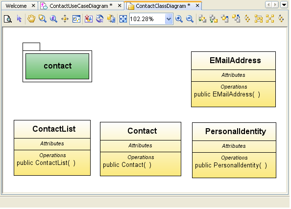
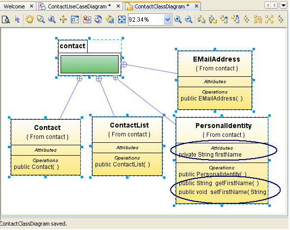
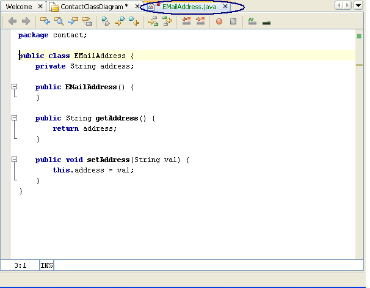
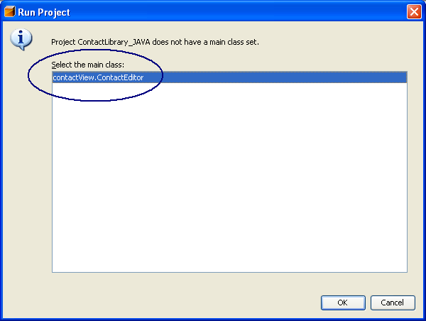
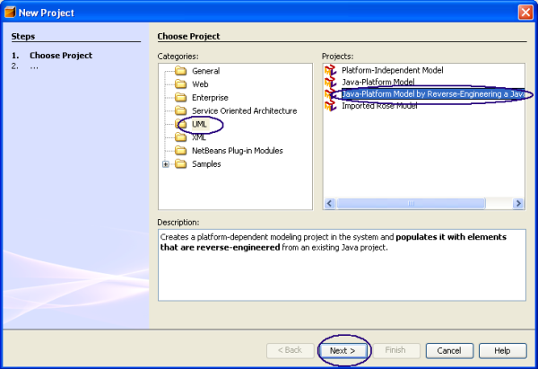

LAB-8110 NetBeans Enterprise Pack: Advanced UML Modeling
The NetBeans IDE, in addition to providing support for developing IDE plug-in modules and rich client applications based on the NetBeans platform, contains the NetBeans Enterprise Pack 5.5 Preview software which in turn provides UML modeling, Orchestration Designer, and XML tools to the NetBeans community.
This Hands-on Lab takes you through the process of developing a Java application with the UML Modeling component of the NetBeans Enterprise Pack 5.5 Preview. During this lab you will learn how to design and develop a real life Java application, how to create a reverse engineered UML project from a Java library, how to analyze a project structure and find and correct mistakes using the UML graphical presentation.
Expected duration: 90 minutes
Prerequisites
This exercise assumes you have a basic familiarity with the Java programming language and UML modeling. If you are new to UML, a good
resource for UML modeling techniques and theory is the official UML resource page at
http://www.uml.org/.
System requirements
This tutorial assumes your system meets the following requirements.
- Supported OS: Windows XP/2000, Solaris 8/9/10, Linux
- Memory: 512M minimum, 1024M recommended
- Disk space: 700M bytes
Software Needed for the Tutorial
Before you begin, you need to install the following software on your computer.
- Java Standard Development Kit (JDK) version 5.0 (download)
- NetBeans Enterprise Pack 5.5 (download).
Notations Used in the Tutorial
- <netbeans_install_directory> - directory into which you install
The NetBeans Enterprise Pack 5.5
- <lab_root> - directory into which lab zip file is unzipped.
- This document uses <lab_root> to denote the directory under
which you have unzipped the lab zip file of this hands on lab. The name
of the lab zip file of this handson lab is 8110_nbeuml2.zip.
- Once you unzipped the lab zip file under <lab_root>, it will
create a subdirectory called nbeuml2. For example, under Windows, if you have unzipped
the lab zip file in the root of drive C:\, it will create C:\nbeuml2.
Under Linux/Solaris, if you have unzipped the lab zip file in the $HOME
directory, it will create $HOME/nbeuml2 directory
Tutorial Exercises
Where to send questions
or feedback's on this lab and public discussion forums
- If you have any questions or feedback on this lab, please send them to
the following email alias. Please be advised that this alias is set up for
addressing issues/questions/feedbacks directly relevant to this lab not
for answering general questions on NetBeans Enterprise Pack 5.5 Preview.
- If you have general questions on NetBeans Enterprise Pack, please post
them to NetBeans Enterprise Pack forum.
Exercise 0: Starting Netbeans 5.5 (5 minutes)
In this exercise, you will learn how to start the Netbeans IDE.
Start NetBeans 5.5 Preview (if you have not done it
so yet)
- Under Windows, do one of the following:
- Double-click
on the NetBeans 5.5 Preview icon
from the desktop
- Select Start -> Programs -> NetBeans 5.5 Preview ->
Netbeans IDE 5.5.
- Under Solaris/Linux, type the following commands in a terminal window:
- cd <netbeans_install_directory>/bin
- ./netbeans
In this exercise we will develop a small application that implements editing a simple contact list.
The Contact information will be based on the Contact specifications described in RFC 2425 and RFC 2426.
These specifications describe the widely used vcard format used for interchanging contact information between computer based address
books. For brevity we will work directly with a subset of those specifications.
Firstly, to identify the primary elements and processes of the application,
we will develop a Use Case Model using the UML Use Case Modelling.
Then we will develop the information model using a UML Class Diagram.
UML code generation feature will allow us to generate the java source code for designed application.
We will learn how model updates affect source and source updates affect model.
At the end we will compile and run generated application.
Steps to follow:
- Creating a UML Java-Platform Model Project
- Developing a Use Case Model
- Developing a Class Hierarchy
- Defining Application Classes
- Generating Java Source Code
- Filling up Bodies of Generated Operations
- Run The Developed Application
Creating a UML Java-Platform Model Project
- Choose File from the menu bar and then select New Project. The New Project dialog box appears.
- Under Choose Project pane, select UML under Categories and select Java-Platform Model under Projects.
- Click Next.
- Under Name and Location pane,
- For the Project Name field, enter ContactLibrary_UML.
- For the Project Location field, click Browse to navigate, select the <lab_root>\nbeuml2 directory and click Open.
- Click Finish.
The New Wizard dialog box appears.
- For the Diagram Type field, select Use Case Diagram.
- For the Diagram Name field, enter ContactUseCaseDiagram.
- Click OK.
The ContactLibrary_UML project appears in the Projects window.

Click to Enlarge
Developing a Use Case Model
- Activate ContactUseCaseDiagram diagram by click on diagram's tab or by double click in project tree.
- Open UML Palette (if closed) with main menu Window > Palette.
- Add Actor to the diagram.
- Select Actor in palette.
- Click left mouse button in free space of diagram area.
You'll get new Actor element in your model.
- Name it ContactManager.
- Select the element on the diagram (if not selected).
- Type name of element and press Enter.
Click to Enlarge
- Add Package to the diagram.
- Name it contactAssistant.
- Enlarge the Package to a hold a couple of Use Cases.
- Add UseCase to the Package.
- Name it Manage Contacts.
- Draw Association link from ContactManager actor to Manage Contacts use case.
- Select Association link in palette.
- Click on Actor element.
- Click on Use Case element.
Click to Enlarge
- Add UseCase to the Package.
- Name it Add Contact.
- Draw Include link from Manage Contacts use case to Add Contact use case.
Click to Enlarge
- Add UseCase to the Package.
- Name it Add Personal Information.
- Draw Include link from Add Contact use case to Personal Information use case.
- Add UseCase to the Package.
- Name it Add First Name.
- Add UseCase to the Package.
- Name it Add Last Name.
- Draw Include link from Add Personal Information use case to Add First Name use case.
- Draw Include link from Add Personal Information use case to Add Last Name use case.

Click to Enlarge
- Insert Add Birth Date Extension Point to Add Personal Information use case.
- Invoke Context menu on the use case.
- Click on Insert Extension Point menu item.
Text field was added to use case.
- Type Extension Point name.
- Press Enter.
- Add UseCase to the Package.
- Name it Add EMail Address.
- Draw Include link from Add Contact use case to Add EMail Addres use case.
- Insert Add Address Extension Point to Add Contact use case.
- Insert Add Organization Extension Point to Add Contact use case.
- Insert Update Contact Extension Point to Manage Contacts use case.
- Insert Remove Contact Extension Point to Manage Contacts use case.
Click to Enlarge
Developing a Class Hierarchy
- Create ContactClassDiagram under UML Project Model tree.
- In the Projects window, expand the ContactLibrary_UML node.
- Invoke Context menu on the Model node.
- Click on Add Diagram menu item.
The New Wizard dialog box appears.
- For the Diagram Type field, select Class Diagram.
- For the Diagram Name field, enter ContactClassDiagram.
- Click OK.
- Activate ContactClassDiagram diagram by click on diagram's tab or by double click in project tree.
- Open UML Palette (if closed) with main menu Window > Palette.
Click to Enlarge
- Add Package to the diagram.
- Select Package in palette.
- Click left mouse button in free space of diagram area.
You'll get new package element in your model.
- Name it contact.
- Select the element on the diagram (if not selected).
- Type name of element and press Enter.
Click to Enlarge
- Add Class to the diagram.
- Name it Contact.
Click to Enlarge
- Add Class to the diagram.
- Name it ContactList.
- Add Class to the diagram.
- Name it PersonalIdentity.
- Add Class to the diagram.
- Name it EMailAddress.

- Draw Nested link from Contact class to contact package.
- Select Nested link in palette.
- Click on Class element.
- Click on Package element.
Now class is located in package.
Click to Enlarge
- Draw Nested link from ContactList class to contact package.
- Draw Nested link from PersonalIdentity class to contact package.
- Draw Nested link from EMailAddress class to contact package.

- Insert String firstName attribute to PersonalIdentity class.
- Invoke Context menu on Attributes title within the class.
- Click on Insert Attribute menu item.
Attribute with default name was added to class.
- Delete default name (with backspace) and delete default attribute type (int)
- Type attribute type.
- Type attribute name.
- Press Enter.

- Insert String lastName attribute to PersonalIdentity class.
- Insert String address attribute to EMailAddress class.
- Insert boolean hasPersonalIdentity attribute to Contact class.
- Set default value of hasPersonalIdentity attribute to false in Contact class.
- Double-click the attribute.
- Go to the end of text field.
- Press = and type default value.
- Press Enter.
- Insert PersonalIdentity personalIdentity attribute to Contact class.
- Insert ArrayList<EMailAddress> eMailAddressList attribute to Contact class.
- Set default value of eMailAddressList attribute to new ArrayList<EMailAddress>() in Contact class.
- Insert boolean addEMailAddress(EMailAddress eMailAddress) operation to Contact class.
- Invoke Context menu on Operation title within the class.
- Click on Insert Operation menu item.
Operation with default name was added to class.
- Delete default name (with backspace) and delete default attribute type (int)
- Type operation type.
- Type operation name.
- Type operation arguments.
- Press Enter.
- Insert boolean removeEMailAddress(EMailAddress eMailAddress) operation to Contact class.
- Insert EMailAddress removeEMailAddress(int index) operation to Contact class.
- Insert EMailAddress setEMailAddress(int index, EMailAddress eMailAddress) operation to Contact class.
- Insert ArrayList<Contact> contactList attribute to ContactList class.
- Set default value of ArrayList<Contact> contactList attribute to new ArrayList<Contact>() in ContactList class.
- Insert boolean addContact(Contact contact) operation to ContactList class.
- Insert boolean removeContact(Contact contact) operation to ContactList class.
- Insert Contact removeContact(int index) operation to ContactList class.
- Insert Contact setContact(int index, Contact contact) operation to ContactList class.
The Class diagram should be like this:
Click to Enlarge
- Create empty ContactLibrary_JAVA Java Application.
- Choose File from the menu bar and then select New Project.
The New Project dialog box appears.
- Under Choose Project pane, select General under Categories and select Java Application under Projects. Click Next.
- For the Project Name field, enter ContactLibrary_JAVA.
- For the Project Location field, click Browse to navigate, select the <lab_root>\nbeuml2 directory and click Open.
- Uncheck Create Main Class checkbox
- Click Finish.

- Associate ContactLibrary_UML project with ContactLibrary_JAVA project.
- In the Projects window, select the ContactLibrary_UML node and invoke Context menu.
- Click on Properties menu item.
The Project Properties - ContactLibrary_UML dialog box appears.
- Select Modeling under Categories
- Check Generate Code checkbox
- For the Java Project list, select ContactLibrary_JAVA.
- Click OK.
- Generate Java Source Code
- In the Projects window, select the ContactLibrary_UML node and invoke Context menu.
- Click on Generate Code menu item.
The Code Generation dialog box appears.
- Click Done.
contact package appears in ContactLibrary_JAVA Java Application
Contact, ContactList, PersonalIdentity, EMailAddress classes appear under contact package in ContactLibrary_JAVA Java Application
- Activate ContactClassDiagram diagram by click on diagram's tab or by double click in project tree.
- Go to source of the EMailAddress class element.
- Invoke Context menu within the class element.
- Click on Navigate To Source menu item.
You'll see the source code for class element.

The following methods were generated for the EMailAddress class
- Constructor.
- get/set methods for address attribute.
- Go to source of the PersonalIdentity class element.
The following methods were generated for the PersonalIdentity class
- Constructor.
- get/set methods for firstName attribute.
- get/set methods for lastName attribute.
- Go to source of the Contact class element.
The following methods were generated with default bodies
- boolean addEMailAddress(EMailAddress eMailAddress).
- boolean removeEMailAddress(EMailAddress eMailAddress).
- EMailAddress removeEMailAddress(int index).
- EMailAddress setEMailAddress(int index, EMailAddress eMailAddress).
- Change body of boolean addEMailAddress(EMailAddress eMailAddress) operation for Contact class to
return this.eMailAddressList.add(eMailAddress);
- Change body of boolean removeEMailAddress(EMailAddress eMailAddress) operation for Contact class to
return this.eMailAddressList.remove(eMailAddress);
- Change body of EMailAddress removeEMailAddress(int index) operation for Contact class to
return this.eMailAddressList.remove(index);
- Change body of EMailAddress setEMailAddress(int index, EMailAddress eMailAddress) operation for Contact class to
return this.eMailAddressList.set(index, eMailAddress);
- Press <Alt+Shift+F> to fix all class's imports
- Go to source of the ContactList class element.
- Change body of boolean addContact(Contact contact) operation for ContactList class to
return this.contactList.add(contact);
- Change body of boolean removeContact(Contact contact) operation for ContactList class to
return this.contactList.remove(contact);
- Change body of Contact removeContact(int index) operation for ContactList class to
return this.contactList.remove(index);
- Change body of Contact setContact(int index, Contact contact) operation for ContactList class to
return this.contactList.set(index, contact);
- Press <Alt+Shift+F> to fix all class's imports.
- Build ContactLibrary_JAVA application
- In the Projects window, select the ContactLibrary_JAVA node and invoke Context menu.
- Click on Build Project menu item.

- Correct errors if build was failed
- Add contactView package into ContactLibrary_JAVA application.
- Get ContactEditor JFrame (java and form files) from <lab_root>\nbeuml2\AppCreate\ContactLibrary\src\contactView directory and
copy them to contactView package of ContactLibrary_JAVA application (<lab_root>\nbeuml2\ContactLibrary_JAVA\src\contactView).
- Run ContactLibrary_JAVA application
- In the Projects window, select the ContactLibrary_JAVA node and invoke Context menu.
- Click on Run Project menu item.
The Run Project dialog box appears.
- Select contactView.ContactEditor under Select the main class.

- Click OK.
The Contact Editor window appears.
- There are two contacts in the Contact List on the Contact Editor window
- Gail Gardner, Gail.Gardner@sun.com.
- Tom Davis, Tom.Davis@sun.com.
- Add Mike Wazowski, Mike.Wazowski@monster.com contact to Contact list
- For the First Name field, enter Mike.
- For the Last Name field, enter Wazowski.
- For the EMail Address field, enter Mike.Wazowski@monster.com .
- Click Add.
Mike Wazowski, Mike.Wazowski@monster.com contact is added to Contact list.
- Close Contact Editor window.
Summary
In this exercise, you learned how to create new Java application using UML Modeling.
You learned how to perform the following tasks:
Desing and analyze application using Use Case Diagram
Develop Class hierarchy of Java application on Class Diagram
Filling Java classes with attributes and operations on UML diagram
Generating Java source code for Application developed on diagram
In this chapter we will present a process for Maintaining a Java Contact Editor application using UML
modeling techniques.
We will use java application created by another developer in Exercise 1.
To understand project structure we will begin with generating a UML diagram from an existing Java sources.
The Next we will generate a UML Sequence diagram illustrating the interaction that takes place between the
contact list view and the contact class library model.
We will use the Sequence diagram to find a bug in the update process.
We will then proceed with fixing localized bug.
And at the end we will compile and run the editor to check the fix.
Steps to follow:
- Step 1: Open Existing Java project with existing sources
- Step 2: Run project to find a mistake
- Step 3: Create a UML project by reverse engineering
- Step 4: Generate Class Diagram for Project
- Step 5: Change diagram view
- Step 6: Review project structure on Class Diagram
- Step 7: Generate a Sequence Diagram for an Operation
- Step 8: Review update operation on Sequence diagram
- Step 9: Fix problem
- Step 10: Run project to check
Step 1: Open Existing Java project with existing sources
Note: Close all projects from from previous exercises.
- Choose File from the menu bar and then select Open Project.
- Browse to the <lab_root>/nbeuml2/AppMaintain directory and select ContactLibrary2 project. Click Open Project Folder.
Click to Enlarge
- New ContactLibrary2 project node will appear in Projects tab.
Step 2: Run project to find a mistake
- Right-click on the java Project node and select 'Run Project' from Context menu.
- In opened 'Run Project' dialog window select 'contactView.ContactEditor' main class
Press OK.
- Output window shows compilation and running status.
- Contact Editor form is started.
- Double-Click on 'First Name' of existing 'Tom Davis' contact item to edit it.
Table cell becomes editable.
Type new Name 'Bob'.
Change Email to 'Bob.Davis@sun.com'.
Click 'Update' button.
- Close Contact Editor window.
Look at output window.
Editor application will print out updated Contact information.
Actually you can see that 'Tom Davis' record wasn't updated.
- This means there is an error in updating mechanism.
We should review application, find a mistale and fix it.
- Now you can close 'Output - ContactLibrary2 (run)' window.
Step 3: Create a UML project by reverse engineering
- Invoke 'File | New Project' command from the menu bar. The New Project dialog box appears.
- Under Choose Project pane, select UML under Categories and select Java-Platform Model by Reverse-Engineering a Java Project under Projects. Click Next.

Click to Enlarge
Note: You can create uml project from your sources another way by selecting Java-Platform Model project with turning on Generate Source on next wizard step
- Under Name and Location pane,
- For the Project Name field, enter ContactLibrary2UML .
- For the Project Location field, click Browse to navigate to and select the AppMaintain folder and click Open.
- Choose ContactLibrary2 project in Java Project combobox.
Click to Enlarge
Note: You have to select java project to proceed with Java-Platform Model by Reverse-Engineering a Java Project project creation. You can choose only from already opened java projects.
- When the reverse engineering is done, click Done. The ContactLibrary2UML project appears in the Projects window.
Step 4: Generate Class Diagram for Project
- In the Projects tab window, under the ContactLibrary2UML node, expand the Model node.
Expand the contact and contactView package nodes.
- Select the contact and contactView packages and all class nodes under them.
You may click on contact folder and then, holding Shift key, click on ContactEditor to select all element between them.
- Right-click the selected elements and choose Create Diagram From Selected Elements from the contextual menu.
- In the Diagram Type list, select Class Diagram.
Type ContactClassDiagram in the Diagram Name field,
leave ContactLibrary2UML in the Namespace field
and click OK.
- This action does the following:
- Creates a ContactClassDiagram node under the Model node
- Displays the new diagram in the Diagram editor
- Opens the Modeling Palette
Click to Enlarge
Step 5: Change diagram view
- Double-click the BankClassDiagram tab at the top of the Diagram editor.
Note: To reverse this action double-click the BankClassDiagram tab again.
- Select 'Zoom with marquee' button on diagram toolbar.
- Click on empty diagram area near the top left corner of ContactEditor symbol on diagram and do not release the mouse button.
Holding mouse button move pointer to select the whole ContactEditor symbol. Release button.
- You will see selected area enlarged to the whole visible diagram area.
Click to Enlarge
Step 6: Review project structure on Class Diagram
- Look at ContactEditor class symbol on diagram.
- There is 'updateButtonActionPerformed(ActionEvent)' operation which name
(according to widespread naming approach) shows that it is invoked from 'update' button event listener.
- And method 'setContact(int, Vector)' which performs actual data updating
- setContact() is probably invoked from updateButtonActionPerformed().
Step 7: Generate a Sequence Diagram for an Operation
- Let's analyze updateButtonActionPerformed() method.
Right-click on 'private void updateButtonActionPerformed(ActionEvent)' operation area
and invoke 'Reverse Engineer Operation' command.
- The New Wizard dialog for creating a new diagram appears.
- In the Diagram Type list, select Sequence Diagram.
- In the Diagram Name field, type ContactEditorSD.
- Accept the default value in the Namespace field and click OK. A sequence diagram appears in the Diagram Editor.
- Expand the Diagram editor and manipulate the zoom level so that you can easily examine the new sequence diagram.
Click to Enlarge
Step 8: Review update operation on Sequence diagram
- We can see Objects created and used in updateButtonActionPerformed method.
Click to Enlarge
- We can see combined fragments like 'if', loops etc.
- And We can analyze messages invocation sequence.
- For updateButtonActionPerformed we see method getSelectedRow() that selects updated row .
- Then requests new values using getValueAt(int, Integer) method.
- Adds them into Vector.
- And then should invoke setContact(int, Vector) method to perform update.
But it doesn't!
- We have localized a mistake.
Step 9: Fix problem
- Switch to class diagram
- Open context menu for updateButtonActionPerformed method of ContactEditor class element
and invoke 'Navigate to source' command.
- Add 'this.setContact(rowIndex, rowData);' invocation as the last line of 'if' clause.
Click to Enlarge
Step 10: Run project to check
- Run ContactLibrary2 project again to check if updating works now.
- Change First Name and Email Address to 'Bob' and 'Bob.Davis@sun.com' again.
Press Update button.
- Close application window and check in output that contact data was updated.

Summary
In this exercise, you learned how to reverse engineer and analyze a Java application.
You learned how to perform the following tasks:
Create Reverse-Engineered UML Project
Generate a class diagram from the imported application
Generate a sequence diagram for an operation
Analyze generated sequence diagram
For more information on NetBeans Enterprise Pack UML Modeling, consult the online help from the IDE and visit the NetBeans Enterprise Pack Developers Resource portal for tutorials, videos, and other resources
on UML modeling.
Next Steps
To send comments and suggestions, get support, and keep informed on the latest
developments on the NetBeans IDE J2EE development features, join the nbusers@netbeans.org
mailing list.


{kind=link}
{kind=link}
{kind=link}
{kind=link}
{kind=link}
{kind=link}
{kind=link}
{kind=link}
{kind=link}
{kind=link}
{kind=link}
{kind=link}
{kind=link}
{kind=link}
{kind=link}
{kind=link}
{kind=link}